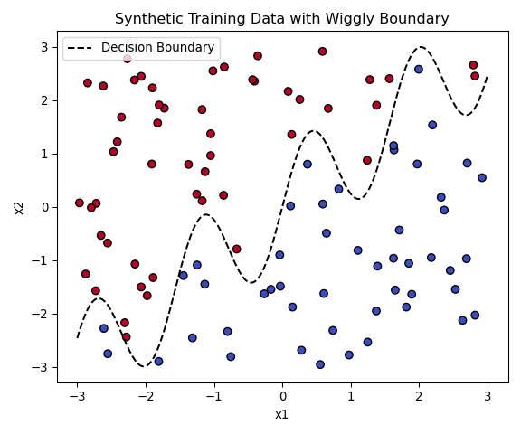
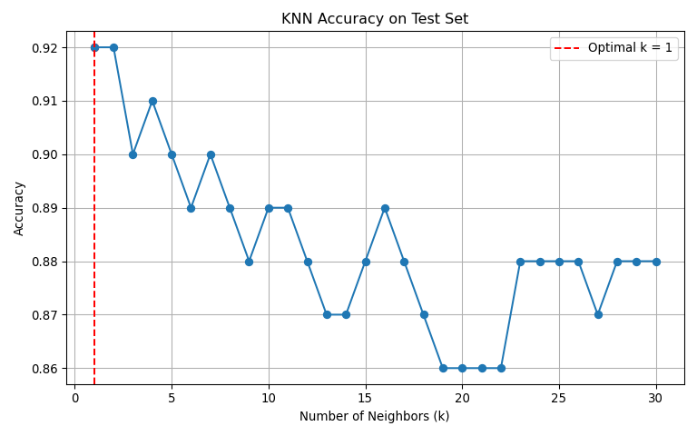

# Re-execute after kernel reset
import numpy as np
import pandas as pd
import matplotlib.pyplot as plt
# Generate training data
np.random.seed(42)
n_train = 100
x1_train = np.random.uniform(-3, 3, n_train)
x2_train = np.random.uniform(-3, 3, n_train)
boundary_train = np.sin(4 * x1_train) + x1_train
y_train = (x2_train > boundary_train).astype(int)
train_data = pd.DataFrame({
"x1": x1_train,
"x2": x2_train,
"y": y_train
})
# Generate test data
np.random.seed(99)
n_test = 100
x1_test = np.random.uniform(-3, 3, n_test)
x2_test = np.random.uniform(-3, 3, n_test)
boundary_test = np.sin(4 * x1_test) + x1_test
y_test = (x2_test > boundary_test).astype(int)
test_data = pd.DataFrame({
"x1": x1_test,
"x2": x2_test,
"y": y_test
})HW4 Part 2 (2a): Supervised Learning for Predictive Modeling
Using K-Nearest Neighbors to Predict Customer Satisfaction
2a. K Nearest Neighbors
This exercise implements the K-Nearest Neighbors algorithm from scratch and evaluates its performance on a synthetic classification task with a nonlinear boundary.
Visualizing the Training Data
We generate a dataset of 100 points where each observation has two features (x1, x2).
The class label y is determined by whether the point lies above or below the nonlinear decision boundary:
[ x_2 = (4x_1) + x_1 ]
The plot below illustrates the decision boundary and class distribution:

Implementing and Evaluating KNN
We implemented KNN from scratch. For each point in the test set (also of size 100), we computed its K nearest neighbors in the training set and classified it by majority vote.
We evaluated model accuracy for ( k = 1 ) through ( k = 30 ), and the results are summarized below:

As shown, the accuracy peaks at K = 1 with an accuracy of 92%.
This suggests that in this setting, the 1-nearest neighbor already captures the complex boundary quite well.
Final Notes
Unlike tree-based models or regression, K-Nearest Neighbors does not produce variable importance metrics.
Because it makes decisions purely based on distance in feature space, both features (x1, x2) contribute jointly to the classification task.
If one wants to evaluate feature contributions explicitly, alternative models like random forests, logistic regression, or SHAP-enhanced models may be better suited.